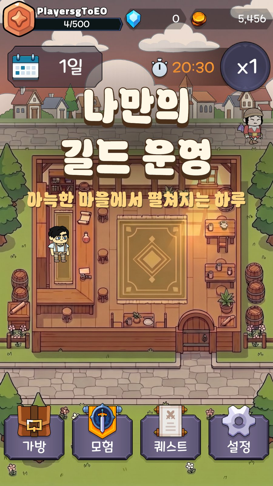
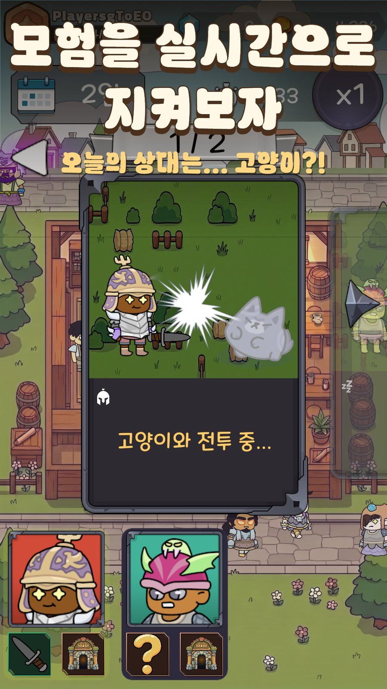
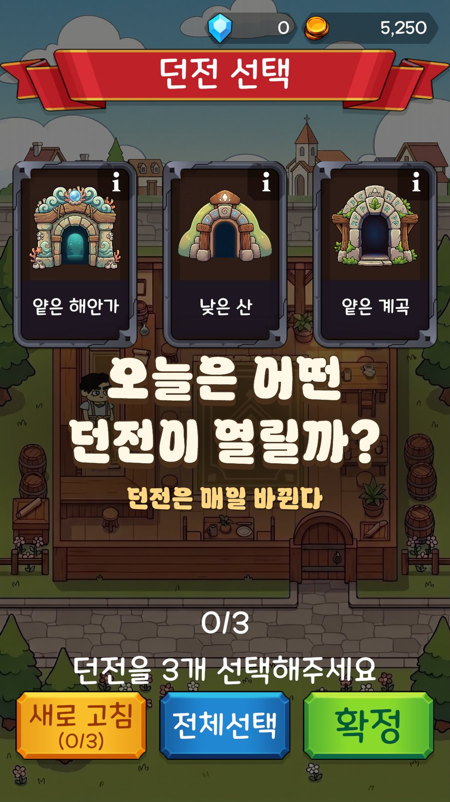
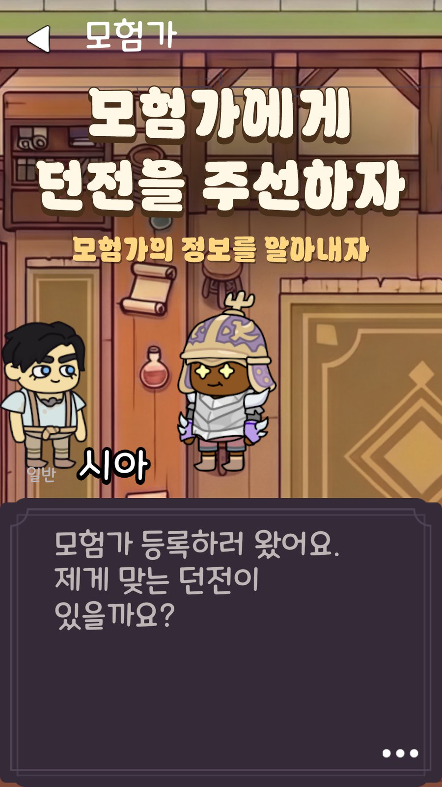
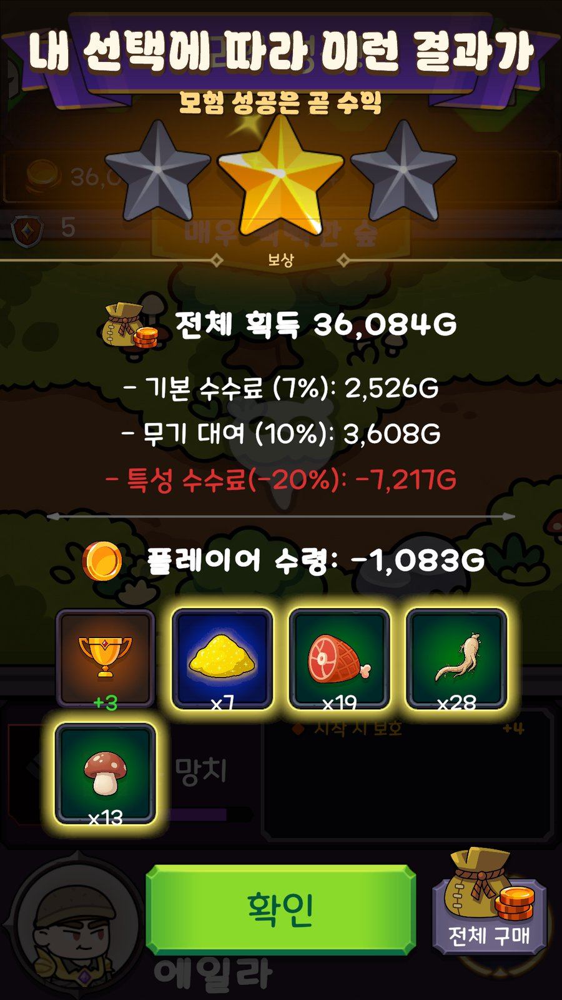
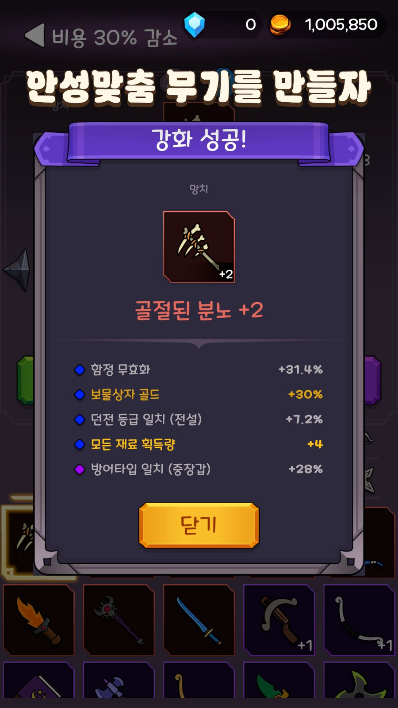

모험가에게 던전을 주선하고 무기를 대여해 수수료를 받는 경영 게임입니다. 하루가 아침·낮·저녁·밤으로 흐르고, 플레이어는 정보(점술·수색·대화)를 사서 성공률을 올리며 주간 의뢰와 벌금 압박 속에서 길드를 키웁니다. 기획·프로그래밍·서버·운영 툴·출시까지 전 과정을 혼자 진행했습니다.


| 엔진 · 언어 | Unity 2022.3 LTS · C# · uGUI · TextMeshPro · Addressables · Spine 런타임(외형 애니메이션) · ScriptableObject 데이터 |
|---|---|
| 온라인 | Unity Gaming Services — Authentication(익명) · Cloud Save(Default/Protected) · Cloud Code(JS 11개) · Leaderboards · Analytics |
| 다국어 | Unity Localization 1.5 — String Table 7컬렉션 · 로케일별 폰트 폴백 · PowerShell 감사 스크립트 |
| 툴 · 운영 | Python 3 (FastAPI · httpx · pytest · Playwright) · Google OAuth · Docker · GitHub Actions · PowerShell · Unity Editor 확장 15종 |
| §1 게임 개요 | §2 아키텍처와 저장 계층 | §3 밸런스 시뮬레이터 ★ | §4 UGS 라이브옵스 ★ |
| §5 데이터·다국어 파이프라인 | §6 에디터 툴과 CI | §7 출시와 운영 | §8 한계와 회고 |
| 시간대 | 플레이어가 하는 일 |
|---|---|
| 아침 06–09 | 이벤트 NPC(대장장이·무기상·수수께끼 상자 등) 응대, 09:00 의뢰판 갱신 |
| 낮 09–18 | 방문한 모험가에게 던전 배정 + 무기 대여. 점술·수색·대화로 숨은 스탯/특성을 공개하고 성공률을 올림 |
| 저녁 18–21 | 전령 보고 — 모험 결과 정산(수수료 7% + 대여료 10% ± 특성), 재료 회수 |
| 밤 21:00 | 자동 일시정지 → 다음 날. 주말엔 주간 의뢰 판정, 미달 시 벌금 |
실시간 1초 = 게임 3분, 배속 조절 가능. 게임오버(파산)되면 회차가 끝나고 유산(영구 업그레이드)이 남아 다음 회차가 조금 쉬워지는 로그라이트 구조입니다. 40주 캠페인 이후는 난이도 등급이 붙은 엔드리스 의뢰가 이어집니다.




| 호출 | 규칙 |
|---|---|
| View → Controller | 도메인 매니저는 반드시 Controller 경유 |
| View → DataManager | 정적 SO 카탈로그, 읽기 전용만 허용 |
| View → AnalyticsManager | 관측 전용(상태 미변경)이라 직통 허용 — 컨트롤러 없는 View의 btn_clicked |
| Manager → View/Controller | 절대 금지. Manager는 event Action<>만 노출 |
거대 매니저는 기능별 partial로 분할 — AdventureManager 7파일 3,127줄(Calculations · EventProcessor · Sequence · HeraldReport · Mood), VisitorManager 5파일, Insight 5파일.
RuntimeInstance는 정적 SO를 참조로 직접 들고, 저장 시에만 ID 문자열로 굽습니다. RuntimeInstance는 DataManager를 모르며, 복원은 각 도메인 매니저의 Initialize(GameData)가 맡습니다.
// 굽기 — Utils/SaveDataConverter.cs
weaponDataID = instance.weaponData.StaticID, // SO 참조 → ID
dungeonDataID = instance.dungeon?.StaticID ?? "unknown",
rentedWeaponInstanceID = instance.rentedWeapon?.instanceID,
// 복원 — Systems/InventoryManager.cs:32 LoadFromGameData
var weaponData = DataManager.Instance.GetWeapon(saveData.weaponDataID);
if (weaponData == null) continue; // 폐기된 ID는 스킵
var effects = ReifyEffectsFromSave(saveData.effects);
ownedWeapons.Add(new WeaponInstance(weaponData, effects, saveData));DataManager의 판정 기준: "이 메서드가 게임 규칙을 아는가(→ 도메인 매니저), 필드 값만 보는가(→ DataManager)". 예: GetEnforceMaterialByGrade는 규칙이라 BlacksmithManager로.
GameManager([DefaultExecutionOrder(-100)])의 InitializeManagers()가 21개 매니저를 의존 순서로 초기화합니다: Inventory → … → Visitor → Adventure(모험가·무기가 먼저 있어야 진행 중 모험 복원) → … → Tutorial(맨 끝).
문서 원문: "데이터 손실 버그가 반복적으로 나왔던 지점이라 공통 장치로 고정해 두었다."
| 규약 | 구현 |
|---|---|
| 원자적 쓰기 | SaveManager.WriteAllTextAtomic — .tmp에 쓰고 File.Replace, 직전본은 .bak. 로드 시 본 파일 손상 → .bak 복구, 손상본은 .corrupt-타임스탬프로 보존 |
| 확정 직후 저장 | SaveAfterCommittedAction(reason) — 강화·상자·모험 출발 등 도박성 결과 확정 직후 저장해 강제 종료 세이브스컴 차단 |
| 로드 후 sanity pass | RepairLoadedGameData() — 복원 실패로 드롭된 모험의 isRented/isAdventuring 해제, 고아 아이템 반환 |
유산(PlayerData) 로드는 LoadDataStatus(Success / Missing / RestoredFromBackup / Corrupted)를 함께 반환 — Corrupted면 빈 데이터로 조용히 확정하지 않고 클라우드 복구·안내를 거칩니다.
코드: Scripts/Core/GameManager.cs#L46, #L123, #L260 · Scripts/Systems/SaveManager.cs#L195 · Scripts/Systems/InventoryManager.cs#L32 · Scripts/Utils/SaveDataConverter.cs
SimBundle.Load()가 Config SO 15종과 던전·무기·의뢰·모험가 데이터를 AssetDatabase로 통째로 읽습니다. 그래서 PriceTierConfig 값을 바꾸면 시뮬 코드는 손댈 필요가 없습니다. 런타임 MonoBehaviour 매니저는 호출하지 않고 계산식만 출처 주석을 달아 재구현했으며, 순수 static 유틸(StatCurve, TypeAdvantage)은 그대로 공유합니다.// SimCore.cs:700-704 — 축별 독립 RNG 스트림
rng = new Random(seed*977 + persona.Name[0] + (runIndex-1)*7919);
traitRng = new Random(seed*733 + ...); // 특성 롤
seerRng = new Random(seed*509 + ...); // 점술
namedRng = new Random(seed*331 + ...); // 네임드 스폰/재방문
questRng = new Random(seed*199 + ...); // 엔드리스 템플릿 추첨| 실행기 | 기본값 | 산출 |
|---|---|---|
RunSim.bat | 100시드 / 100주 / 5회차 | 페르소나 비교 · R 비율표 · 회차 곡선 |
RunSweep.bat | 100 / 70 | 유산 20종 단독 효과 (21구성) |
RunEndlessSweep.bat | 60 / 100 | 엔드리스 템플릿 16종 단독 반복 (17구성) |
진단 플래그 -simForceMorning / -simForceReroll: "이득일 때만 한다"는 봇 정책은 지출 0을 만드는데, 그 0이 봇 결함인지 콘텐츠가 죽은 것인지는 강제 참여로 한 번 더 돌려야 구분됩니다 — 실제로 4번 겪은 함정을 체크리스트로 남겼습니다.
R = 모험 1회 성공 시 순수입. 이 게임의 모든 골드는 모험에서 나오므로 모든 가격을 R의 배수로 정의하고, 조정 위계를 고정했습니다.
1차 R 확정 던전 보상 × 수수료 — 다른 모든 것의 기준점
2차 가격 = R 배수 무기 1.8R~30R / 수색 0.3R / 점술 0.6R / 재부여 ~6R
3차 압박 = 수입 비율 벌금 (1200 + 1300w)
4차 페르소나 격차 생존 주차는 조정 대상이 아니라 "검증 대상"부수 효과: R이 실력 지표를 겸합니다 — 상급자 R≈1,100G, 중급≈700G. 상성을 맞춰 팁 수수료를 받기 때문에 정보의 가치가 R에 이미 녹아 있습니다.
코드: Scripts/Editor/BalanceSimulator/SimCore.cs#L695 (SimWorld.Run) · #L1666 (LaunchAdventure 미러) · SimReport.cs#L500 (AppendRatioTable) · #L76 (paired median) · BalanceSimulatorWindow.cs#L164 (RunBatch) · Tools/BalanceSim/
| 지표 | 상급자 | 중급자 | 초급자 | 합격선 |
|---|---|---|---|---|
| 퀘스트 통과율 | 96% | 70% | 33% | 95↑ / 70 / 40↓ |
| 회차 수명 | 40주 | 31주 | 19주 | — |
| 폐업률 | 10% | 93% | 100% | — |
| 최고 평판 | Diamond | Diamond | Bronze | — |
| 주간 순수입 | 26,851G | 22,982G | 5,760G | — |
| 주간 수색 지출 | 10,825G | 0G | 0G | — |
| 구간 | R | 무기 | 제작 | 재부여 | 대장간 | 수색 | 점술 | 벌금/수입 |
|---|---|---|---|---|---|---|---|---|
| 1–10주 | 757G | 1.8R | 1.1R | 5.9R | 3.3R | 0.3R | 0.4R | 0% |
| 11–20주 | 951G | 3.7R | 1.1R | 5.9R | 9.0R | 0.3R | 0.3R | 0% |
| 21–30주 | 1,086G | 4.2R | 1.2R | 6.2R | 13.9R | 0.2R | 0.3R | 1% |
| 31–40주 | 1,161G | 4.0R | 1.1R | 5.8R | 16.4R | 0.2R | 0.3R | 6% |
같은 파일의 초급자는 R 600 → 1,376G, 벌금/수입 33% → 117% → 86% — 압박이 "수입 비율"로 설계된 대로 초급에게만 걸립니다.
근거 상점가는 고정인데 제작 골드에만 주차 계단(1→4.5배)이 붙어 후반에 제작이 구매보다 비싸졌습니다. 레시피 24종 전수 계산: 41주+ 영웅 104~120%, 전설 116~123%. "재료를 모으는 수고를 더 하고 돈도 더 내는 구조."
수정 PriceTierConfig.weaponCraftCost 1/1.5/2.5/3.5/4.5 → 1/1.2/1.5/1.8/2.0 (대장간·재부여와 동일 곡선으로 통일)
| 구간 (상급자) | 구매 전→후 | 제작 전→후 |
|---|---|---|
| 11–20주 | 3.9R → 3.7R | 1.8R → 1.1R |
| 31–40주 | 2.9R → 4.0R | 1.6R → 1.1R |
우려 2건도 실측으로 해소 — 후반 골드 축적 폭주 없음(40주 보유 골드 1,684,102 → 1,686,848G), 제작이 구매를 잠식하지 않음(구매 지출 동일, 보유 무기 27 → 34자루).
발견 엔드리스 템플릿 16종은 아키타입(휴식/표준/소피크/시험)으로 분류돼 있었지만 실측 통과율은 분류와 무관하고 심지어 역전 — "'쉬움'으로 구운 W61(36.8%)이 '최고난도' W70(96.7%)보다 2.6배 어려웠다." 난이도를 만드는 건 아키타입이 아니라 병목 3종(저가용 던전 요구 / 희소 무기 석궁 요구 / 둘의 조합)이었습니다.
수정 QuestDifficulty 4단계(Easy/Normal/Hard/Extreme)를 병목 개수 기반으로 신설, 61주+ 벌금을 고정 79,200G에서 79,200 + 8,000 × (주차-61) 곡선으로 전환.
| 템플릿 | 통과율 | 폐업률 | 주간 순수입 |
|---|---|---|---|
| 전 (sim_endless_sweep_20260729_224539) — 16종 전부 "Easy", 44~46%로 뭉개짐 | |||
| 기준선 | 44.2% | 66.1% | −79,002G |
| W41 [Easy] | 46.2% | 64.7% | −76,144G |
| 후 (…_230337, 18분 뒤) — 라벨 순서 = 통과율 순서 | |||
| W41 [Easy] 단골들의 주문 | 97.6% | 0.0% | +104,853G |
| W45 [Normal] 끝나지 않는 명성 | 94.6% | 0.0% | +93,683G |
| W49 [Hard] 쏟아지는 주문 | 74.6% | 29.4% | +23,724G |
| W53 [Extreme] 살아있는 전설 | 46.7% | 60.5% | −57,502G |
EndlessQuestConfig에서 읽도록 고쳤습니다.문서: Docs/오늘도장비대여/Balance/Reference/밸런스_시뮬레이터_정리.md · Balance/Changelog/2026-07-29_엔드리스_난이도등급과_벌금곡선.md · 2026-08-01_무기제작비_계단_완화.md · Docs/Simulation/
banned/banUntil 재확인 (에러 2006)startGameSession이 서버에서 만든 토큰을 Protected에 저장, 제출 시 대조하고 sessionTokenUsed로 Replay 차단. 사용 처리는 읽어둔 writeLock으로 조건부 갱신 → 동시 제출(TOCTOU) 시 한쪽만 성공claimedDays × 30초claimedDays와 클라우드 playerData.currentDay를 대조해 거부하던 로직을 로그만 남기도록 바꿨습니다. 둘 다 클라이언트가 쓰는 값이라 치터는 저장본을 먼저 위조하면 통과하는 반면, 정상 유저는 일자 경계에서 업로드가 한 번만 늦어도 거부당해 기록을 영구히 잃습니다. "막지 못하는 치터 vs 잃는 정상 유저"를 저울질한 판단입니다.
길이 2~12 · 정규식 ^[가-힣a-zA-Z0-9_]+$ · 욕설 필터는 NFKC 정규화 + 소문자화 후 매칭(전각/호환문자 우회 차단), 금칙어는 SO에서 스크립트로 JS에 자동 인라인. 변경 횟수는 writeLock 조건부 증가로 동시 요청 회피 차단. 리더보드 표시 직전 서버가 <>를 제거해 TMP rich-text 주입도 막습니다.
uploadSave가 저장과 동시에 서버 시각 스탬프를 기록하고, 클라이언트는 자기 마지막 업로드 스탬프만 기억합니다. 기기 시간 조작으로 오래된 저장이 최신으로 오판되는 일이 없습니다.
// CloudSyncService.ResolveGameDirection 요지
클라우드 스탬프 > 이 기기의 마지막 업로드 스탬프 → 클라우드 채택
같다 (= 클라우드가 이 기기가 올린 본) → 로컬 채택 (오프라인 진행 가능성)
로컬 legacy 손상(IsLegacyCorrupted) → 스탬프 무시, 무조건 클라우드playerData가 없어도 유산은 내려받아야 하므로.pendingCloudClear로 재시도하며, 이 정리는 항상 Download/UploadPending보다 먼저 호출됩니다(3곳 모두 주석으로 고정).SignInAttemptFinished 신호로 조기 탈출."playerId-secret", 24h 만료, 1회용. secret 불일치와 데이터 없음을 같은 에러코드로 응답해 계정 존재 여부 오라클을 차단. 원 기기는 30초 폴링으로 사용 감지 후 전체 wipe.코드: Tools/CloudCode/submitLeaderboardScore.js#L41 · changeNickname.js#L46 · redeemRestoreCode.js#L69 · Scripts/Systems/CloudSyncService.cs#L76 · Scripts/Systems/LeaderboardManager.cs#L378 · Tools/admin-site/app/services/ban_service.py#L48
UGS Analytics는 미등록 이벤트/파라미터를 invalid로 조용히 버립니다. 코드와 대시보드 스키마가 어긋나면 지표가 소리 없이 빠집니다. 그래서 events.json(이벤트 28개 · 파라미터 73개)을 단일 원본으로 두고 세 방향으로 대조합니다.
| 도구 | 하는 일 |
|---|---|
analytics.py check(530줄, 표준 라이브러리만) | C# 소스를 정적 파싱해 Send("event", dict) 호출의 이벤트명·딕셔너리 키를 추출하고 events.json과 대조. 주석 제거·괄호 매칭·제네릭 제거·변수로 넘긴 딕셔너리를 메서드 범위에서 역추적. 어긋나면 exit 1 — GitHub Actions에서 실행 |
analytics.py render | events.json → 대시보드 등록 문서의 생성 구간 갱신, CI가 diff 확인 |
dashboard_sync.py(626줄, Playwright) | Unity가 이벤트 스키마 공개 API를 제공하지 않아(조사 근거를 docstring에 기록) 대시보드를 브라우저로 조작. pull/diff/apply, 삭제는 하지 않음. 비공식 경로임을 스스로 명시 |
required를 어디에도 두지 않음 — 조건부 파라미터가 많아 하나라도 빠지면 이벤트 전체가 폐기되므로.Flush().duration_sec) / 버튼 / 도메인 결과. 분석 목표 G1~G27과 퍼널 A~L에 대응하는 Snowflake SQL 템플릿 786줄 문서화.deploy.py(593줄, 표준 라이브러리만): envs / diff(차이 있으면 exit 1) / push --yes. module.params 블록을 파싱해 Admin API 타입으로 변환, 5xx/429 재시도, 대시보드에서 직접 편집한 흔적(publish 미완 초안) 탐지. GitHub Actions가 main 푸시 시 diff → push → diff로 배포하고, 대시보드 수동 편집은 다음 배포 때 되돌립니다.
| 항목 | 내용 |
|---|---|
| 세션 토큰 난수 | Cloud Code 런타임에 Node crypto가 없어 Math.random() 조합. 방어력은 "서버가 만들어 Protected에 저장하고 대조"에서 나오지만 암호학적으로 안전하진 않음 |
| 시간 검증 상한 | 일당 30초 — 실제 플레이보다 훨씬 느슨. 100일 = 50분만 버티면 통과 |
| 저장본 위조 | 점수–저장본 대조를 의도적으로 포기(4-1). 저장본을 위조하는 치터는 통과. "안티치트 완결"이 아니라 "정상 유저 손실 없는 선" |
| 강제 업데이트 | 서버는 최소 버전 상수만 내려주고 판정은 클라이언트 — 오프라인 재현성을 택한 대신 강제력 없음 |
| 욕설 필터 | 부분문자열 매칭 — 자모 분리·유사문자(l/1)·특수문자 삽입은 못 막음. 55KB 목록을 소스에 인라인 |
| 감사 로그 | 어드민은 actor_email을 받지만 logger.info뿐. 확장 자리만 확보 |
| 리더보드 닉네임 | metadata 갱신 제약 때문에 조회마다 최대 100명 Cloud Save 병렬 읽기. 1시간 TTL 캐시로 완화했지만 확장성 낮음 |
| 코드 중복 | Cloud Code Scripts가 모듈 import를 제한해 밴 판정 로직이 두 파일에 복제됨 |
| 테스트 범위 | 어드민 사이트 273줄이 이 시스템의 유일한 자동 테스트. Cloud Code JS·C# 매니저는 미커버 |
코드: Tools/Analytics/analytics.py#L240 (scan_file) · #L196 (resolve_variable_keys) · Tools/Analytics/events.json · Tools/CloudCode/deploy.py · .github/workflows/ · Scripts/Systems/AnalyticsManager.cs
문제 밸런스 데이터를 스프레드시트로 왕복 편집하는데, SO 필드와 CSV 컬럼이 어긋나도 컴파일러는 잡아주지 않습니다. 엉뚱한 컬럼 값이 엉뚱한 필드에 들어가도 조용히 성공합니다 — "빌드는 통과해도 데이터가 무음으로 깨진다(특히 컬럼 인덱스 밀림)."
해결 5파일 2,661줄의 에디터 툴. 세 탭 모두 쓰기 전에 diff를 보여주고 사람이 체크박스로 승인합니다.
| 탭 | 동작 |
|---|---|
| Export | SO → _preview.csv만 생성, 원본 CSV와 diff. 메인 13 + 서브리스트 12 테이블 |
| Applier | preview → 원본 덮어쓰기를 별도 승인 단계로 분리 |
| Import | CSV → SO 결과를 메모리에서 먼저 계산 → diff → 부분 승인 → 의존 순서(Material → … → Dialogue)로 적용, 체크된 삭제 행은 에셋 삭제 |
// CSVImportTab.cs:560 — 스키마를 규칙 배열로 선언, 오류 1건이면 그 타입 전체 중단
if (Validate("WeaponData", 9, new[]{
"str","str","str","enum:Grade","enum:WeaponType","int","str","int","str"}) > 0) return;Validate: 컬럼 수 · int/float/bool 파싱 · enum:Grade는 13종 enum 맵에서 Enum.IsDefined. 오류 행·헤더명·실제값을 찍음CSVDiffCore.Compute: StaticID 키 합집합 순회 → Added/Removed/Modified, 컬럼별 "basePrice: 100→120" 생성. 개행 정규화로 가짜 diff 억제, 서브리스트 행은 __N dedup출발점 문자열 약 2,300개가 전량 하드코딩. 전 UI가 한글 전용 폰트 Maplestory Light SDF 하나를 82파일 1,109곳에서 참조 — 가나·한자 글리프가 없어 ja/zh는 렌더링 자체가 불가능했습니다.
Asset Table로 폰트를 스왑하면 머티리얼 프리셋까지 흔들려 기각. 대신 배정 폰트는 그대로 두고 ja/zh 폰트를 폴백으로 추가, 로케일 변경 시 폴백 순서만 재배열합니다(ja → [JP, SC], zh → [SC, JP]). 이유는 Han unification — ja/zh가 공유하는 한자 코드포인트는 폴백 1순위 폰트 자형으로 그려지므로 순서가 곧 자형입니다.
| 옵션 | 글리프 | 용량 | 판정 |
|---|---|---|---|
| 실사용 문자만 Static | 1,984 | ~6.4MB | 닉네임 등 임의 입력이 두부(□) |
| ja+zh 상용 합집합 Static | ~7,500 | ~24MB | 4배 무거워지고도 인명 한자(喆·玥) 실패 |
| ko Static + ja/zh Dynamic | 11,326 + 런타임 | TTF 20MB | 채택 — 열거 가능한 것(한글 11,172자·게임 텍스트)은 굽고, 불가능한 것(플레이어 입력)은 Dynamic |
기존 판정(프리팹 한글 수 − LSE 수)이 완료를 증명하지 못했습니다 — 정규식 \u[A-C]…이 한글 D 대역(평 등)을 통째로 놓쳐 4건 누락. 그래서 Audit-UiText.ps1이 프리팹/씬 YAML 그래프를 훑어 TMP마다 어느 스크립트의 어느 필드가 .text를 쓰는지 역추적해 6종 판정(EXCLUDED / ATTACHED / CODE_DRIVEN / REVIEW / UNKNOWN_SCRIPT / MISSING)을 내리고, Verify-Localization.ps1이 9항목(4로케일 키 일치 · 빈 번역 0 · en/ja/zh에 남은 한국어 0 · SO 표시 키 1,002건 전부 해석 …)을 exit code로 검사합니다. dotnet build 7초 컴파일 게이트로 Unity를 열지 않고 일괄 치환을 검증했습니다.
규모: String Table 7컬렉션 2,110키(Data 1,002 · UI_Screens 413 · Dialogue 219 · Names 208 · UI_Common 176 · UI_Messages 91 · AppName 1) × 4로케일. 6 Phase 중 5 완료, 법적 문서 로컬라이즈만 남음. ko 데이터 테이블은 만들지 않고 DataLocalizer가 ko/미번역이면 SO 원문을 반환해 이중 관리 제거.
코드: Scripts/Editor/CSVImportTab.cs#L1017 (Validate) · CSVDiffCore.cs#L54 (Compute) · CSVImportTab.cs#L461 (ApplyToSO) · Scripts/Systems/LocalizationManager.cs · Scripts/Systems/DataLocalizer.cs · Tools/Localization/ · Docs/오늘도장비대여/Development/다국어_도입전략.md
Unity 메뉴 Tools > Today's Weapon Rental. Scripts/Editor/ 20파일 12,609줄 — 자체 코드의 17%가 개발 도구입니다.
| 툴 | 줄 | 역할 |
|---|---|---|
| Balance Simulator (4파일) | 5,026 | §3. 헤드리스 회차 시뮬 · 스윕 2종 · 리포트 |
| CSV Tool (5파일) | 2,661 | §5-1. SO ↔ CSV Export/Import/Apply, diff + 검증 + 승인 |
| WeeklyQuestGenerator | 1,002 | 레벨디자인 문서(아키타입 지도 · 도입 스케줄 · 조합 규칙)로 주간 의뢰 SO 일괄 생성 |
| AdventureLogExporter | 868 | 모험 로그 5종 CSV. Play 모드는 매니저, 에디터 모드는 gamedata.json 역직렬화 |
| DebugDashboard | 702 | 런타임 상태 인스펙터 — GameData/Inventory/Visitors/Adventures 4탭, 검색·필터, 0.5초 갱신 |
| Adventurer / VisitorNPC Preview | 976 | 외형 데이터 선택 → 스폰 → Idle/걷기/싸우기 모션 확인 (전용 카메라 + RenderTexture) |
| WeaponEffectDataGenerator · PresetConverter · ProfanityImporter · AndroidApkBuild · ScreenshotCapture | 1,309 | 부가효과 SO 등급별 생성 · 아트메이커 프리셋 → 모험가 변환 · 금칙어 임포트 · 원클릭 APK · F12 스토어 규격 캡처 |
ugs-cloudcode-deploy.yml — Tools/CloudCode/** 변경 시 deploy.py diff → push → diff. PR에서는 diff만. concurrency 그룹으로 동시 배포 직렬화.analytics-schema-check.yml — C# 호출부와 events.json 대조, 대시보드 문서 render 후 diff 확인. 어긋나면 실패.| 날짜 | 버전 | 내용 |
|---|---|---|
| 2026-03-16 | — | 최초 커밋 |
| 2026-07-30 | 0.0.1 알파 | 대장간 강화 재료 → 진화 재료, 성공률 상세 패널, 새 레시피 |
| 2026-08-03 | 0.0.2 | 앱 이름 한국어화, 영어·일본어·중국어 간체 추가, 대화창 가시성 |
| 2026-08-04 | 0.0.3 | 저녁 스킵, 순위 업로드 버그, 본인 닉네임 표시. 같은 날 강제 업데이트·계정 삭제·배포 재시도·CI 자동화 |
| 2026-08-17 | 1.0.0 정식 | Google Play 정식 출시 (bundle 10, AAB 164.5MB) |
| 지적 | 대응 |
|---|---|
| "성공률 텍스트가 뭘 의미하는지 모르겠다" | 문구 수정이 아니라 클릭 시 상세 패널(이벤트별 확률 툴팁, 기분 색상 Config) 신설 |
| "저녁에 할 일이 없어 맥이 끊긴다" | 기존 SkipMorning() 패턴을 대칭 확장한 SkipEvening() — 저비용 재사용 |
| "앱 이름이 영어다" | 한국어화하며 AppName String Table 신설 → 이후 ja/zh 앱명이 얹히는 자리가 됨 |
| "대화창 이름/역할 가시성" | 표시 계층 수정 |
유저는 문구가 아니라 이해와 리듬을 지적했고, 대응은 UI 요소가 아니라 시스템 확장이었습니다.
| 항목 | 사실 |
|---|---|
| 자동 테스트 0개 | Tests/ 폴더는 있으나 비어 있음. 대신 에디터 툴 diff/검증, PowerShell 감사 9항목, dotnet build 게이트, CI 스키마 대조, 어드민 pytest로 안전망을 깔았지만 게임 로직 회귀 테스트는 없음 |
| 테스트 부재가 설계를 막음 | 문서에 명시 — "성공률 계산기·이벤트 진행기 분리 같은 deepening은 하지 않는다. 자동 테스트 인프라가 없는 상태에서 큰 구조 변경은 후순위" |
| 거대 파일 | TutorialManager.cs 2,865줄(partial 미적용, region 21개), AdventureManager.Calculations.cs 1,896줄, SimCore.cs 3,124줄 |
| UI 비중 | UI/ 33,607줄로 전체의 45% — View가 "표시만 한다"는 원칙 대비 두꺼움 (View 74파일, 평균 272줄) |
| 시뮬레이터 이중 관리 | 수치는 단일 원본이지만 공식은 미러. 런타임 계산식 변경을 시뮬에 강제하는 장치 없음 |
| 명명/배치 불일치 | CameraZoomController가 Manager 계층, TraitConfig.asset이 Config 폴더 밖 |
| 알면서 안 고친 낭비 | 메인메뉴 타이틀 글자 11개를 위해 36.4MB 폰트 아틀라스 (재베이크 시 수십 KB) |
MonoBehaviour 없는 순수 C#으로 분리해 EditMode 테스트와 시뮬레이터가 같은 코드를 쓰게 하겠습니다. 미러 이중 관리와 테스트 부재가 같은 뿌리에서 나왔기 때문입니다.GitHub 저장소는 유료 에셋·리소스를 제외한 자체 작성 코드와 문서만 담은 열람용입니다. 본문의 파일#L줄 표기는 저장소의 같은 경로·같은 줄을 가리킵니다 (원본 파일을 그대로 복사했습니다). 설계 문서 65편과 밸런스 변경 기록 35건, 시뮬레이션 리포트 샘플이 Docs/에 있습니다.
https://github.com/seunghee-2002/Todays-Weapon-Rental-code